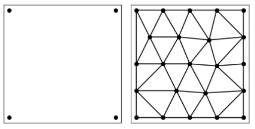
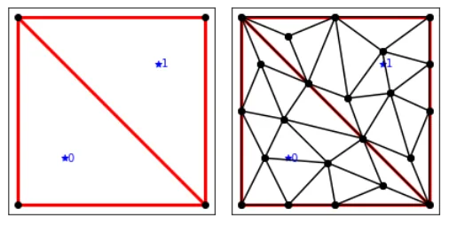

An interview with myself on my favourite meshing library
2022-03-05
Q: Hi self, for this blog series we are looking to highlight our developer's favourite libraries.
S: As a software engineer I always get excited by tools that exactly fit the job that we need it for. For one project, I was looking for a triangle mesh generator.
Q: Wait.. wait... Meshes?
S: Meshes simplify image data and describe complex geometries. A mesh is essentially a collection of vertices and triangles. They are used for computer graphics and physical simulations such as finite element analyses and fluid dynamics.
Q: Like in computer games?
S: Exactly!
Q: I have heard CGAL is the go-to library for Meshing.
S: CGAL is an excellent choice. It's written in C++, and provides easy access to efficient and reliable geometric algorithms. For my project, I was looking for a simple library that runs on all platforms, and can be easily interfaced with Python. Unfortunately, CGAL is a bit heavy-weight, difficult to install on Windows, and the python bindings are limited.
Q: So what did you end up using?
After having tried a few more meshing libraries, I came accross Triangle. Triangle is an open-source two-dimensional quality mesh generator that supports multiple domains. It's written in C++ and supports all three major operating systems. Although it can be used on its own, there is an awesome python library that wraps it.
Q: Cool, so how do you install it?
S: It's available on pypi. If you are already using Python, just do:
pip install triangleQ: That's great! That will make it easy to integrate it into my existing project. How do you use it?
S: Let me give you an example. Here is the code to generate a simple square and triangulate it:
import matplotlib.pyplot as plt
import numpy as np
import triangle as tr
vertices = np.array([[0, 0], [1, 0], [1, 1], [0, 1]])
inp = {'vertices': vertices}
out = tr.triangulate(inp, opts='qa0.05')
tr.compare(plt, inp, out)
plt.show(){kind=link}

Q: So I see triangle fills the box with little triangles. How does that work?
S: Alright, let me break it down for you.
First we import matplotlib, numpy and triangle.
Second, we generate the vertices representing a square with edges of length l and store them in a dictionary.
Next, we call triangulate. The options opts=qa0.05 tell triangle to perform a quality mesh, and that no triangles have an area larger than 0.05. A quality mesh is a mesh with all angles over 30 degrees.
Finally, triangle has a useful function to compare the input and the output.
Try playing around with the area to see what happens to the result!
Q: Cool, so if I give it a set of points, it will generate a mesh surface. Can I specify different regions?
S: Yes, that is one of the strenghts of triangle. It makes multi-region meshing easy. This means that it can label triangles according to the region it belongs to. Let me give you an example:
import matplotlib.pyplot as plt
import numpy as np
import triangle as tr
vertices = np.array([[0, 0], [1, 0], [1, 1], [0, 1]])
segments = np.array([[0,1], [1,2], [2,3], [3,0], [1,3]])
regions = np.array([[0.25, 0.25, 0, 0], [0.75, 0.75, 1, 0]])
inp ={'vertices': vertices, 'segments': segments, 'regions': regions}
out = tr.triangulate(inp, opts='pqa0.05')
tr.compare(plt, inp, out)
plt.show(){kind=link}

Q: Can you explain how it works?
The difference here is that we specify the different segments. The segments describe the boundaries of a region inside the square. Triangles will be generated for each region independently. Each region thus contains its own set of triangles, and are labeled accordingly.
The format for defining the regions can seem a bit tricky at first. The first two numbers describe the coordinate, and the third number is the label of the region. The final number can be used to set the maximum area in that region. We don't use that here, so we set it to 0.
As before, use the compare function to check the result.
Q: Wow! That makes it useful for my finite element analyses.
S: Yup, now you can get started meshing your own data using triangle.
If you want to know more, the documentation for triangle is available here.
For one of my projects, we use triangle as the triangle mesh generator in nanomesh. Nanomesh is a python workflow tool to prepare meshes for finite element analysis from 2D (and 3D!) microscopy image data.